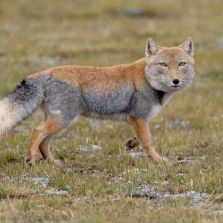

Description of the Tibetan Sand Fox
Appearance
The Tibetan fox (Vulpes ferrilata), also known as Tibetan sand fox is small and compact, with soft, dense coats and conspicuously narrow muzzles and bushy tails. Its muzzle, crown, neck, back and lower legs are tan to rufous coloured, while its cheeks, flanks, upper legs and rumps are grey. Its tail has white tips. The short ears are tan to greyish tan on the back, while the insides and undersides are white. Adult Tibetan foxes are 60 to 70 centimetres (24 to 28 in), not including tail, and have tail lengths of 29 to 40 cm (11 to 16 in). Weights of adults are usually 4 to 5.5 kg (8.8 to 12.1 lb).
Among the true foxes, its skull is the most specialised in the direction of carnivory; it is longer in the condylobasal length, and in mandible and cheek tooth length, than those of hill foxes. Its cranial region is shorter than that of hill foxes, and the zygomatic arches narrower. Its jaws are also much narrower, and the forehead concave. Its canine teeth are also much longer than those of hill foxes.
Habitat
The Tibetan fox is restricted to the Tibetan Plateau in western China and the Ladakh plateau in northern India. It occurs north of the Himalayas in the northernmost border regions of Nepal and India, across Tibet, and in parts of the Chinese provinces of Qinghai, Gansu, Xinjiang, Yunnan and Sichuan.[2] It primarily inhabits semi-arid to arid grasslands, well away from humans or from heavy vegetation cover. It lives in upland plains and hills from 3,500 to 5,200 m (11,500 to 17,100 ft) elevation, and has occasionally been sighted at elevations of around 2,500 m (8,200 ft)
Behaviour
The Tibetan fox primarily preys on Plateau pikas, followed by rodents, marmots, woolly hares and lizards. It also scavenges on the carcasses of Tibetan antelopes, musk deer, blue sheep and livestock. Tibetan foxes are mostly solitary, daytime hunters as their main prey, pikas, are diurnal. Tibetan foxes may form commensal relationships with brown bears during hunts for pikas. The bears dig out the pikas, and the foxes grab them when they escape the bears.
Mated pairs remain together and may also hunt together. After a gestation period of about 50 to 60 days, two to four young are born in a den, and stay with the parents until they are eight to ten months old. Their burrows are made at the base of boulders, at old beach lines and low slopes. Dens may have four entrances, with entrances being 25–35 cm in diameter